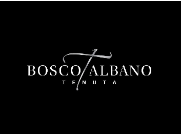

Un legame profondo con la nostra terra, radici sapienti e contadine. Ecco ciò che siamo: un connubio di tradizione e innovazione protesa al futuro che con amore e dedizione coltiviamo. La tenuta Bosco Albano è una realtà imprenditoriale giovane ma dall’esperienza consolidata, forte delle tre generazioni che si sono avvicendate. Il filo conduttore sono i 45 ettari di vigneto Doc, nell’alveo delle Grave del Friuli, a Pasiano di Pordenone; la passione e la cultura del buon bere sono esaltate negli eccellenti vini che qui si producono.
Per assaporare e meditare: così desideriamo interpretare i vini della Tenuta Bosco Albano, riposti amorevolmente nella silente quiete della cantina. Il Borgo e la campagna a fare da contrappunto paesaggistico per chi apprezza il vino, la sua convivialità e la cultura. Il buon bere qui è consapevolezza di ogni singolo calice e ne descrive l’autentica passione profusa e il saper fare del vignaiolo. E in fondo, di noi ci piace dire che questo non è solo un lavoro ma una forma d’arte e il nostro, un vino esperienziale ed emozionale.
 Torna alla home